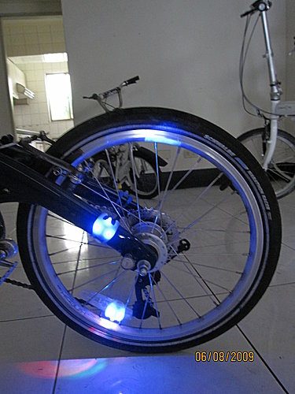

暑假期間，因不需要開車載小朋友上學，決定以騎自行車上下班方式，為避免全球暖化之事貢獻一份心力，只是，騎車第一天，卻被南台灣35度的高溫嚇壞了，騎了不到五分鐘，不得不投降於7月盛夏的艷陽，乃臨時改採「小摺」加「捷運」方式上班，亦可以實際行動支援高雄捷運，但仍維持騎自行車下班，但是夜騎較危險，首先想到要解決的「燈光問題」，在經過網路爬文後，發現一款暴亮瓢蟲燈，供車友參考！
暑假期間，因不需要開車載小朋友上學，決定以騎自行車上下班方式，為避免全球暖化之事貢獻一份心力，只是，騎車第一天，卻被南台灣35度的高溫嚇壞了，騎了不到五分鐘，不得不投降於7月盛夏的艷陽，乃臨時改採「小摺」加「捷運」方式上班，亦可以實際行動支援高雄捷運，但仍維持騎自行車下班，但是夜騎較危險，首先想到要解決的「燈光問題」，在經過網路爬文後，發現一款暴亮瓢蟲燈，供車友參考！
 瓢蟲燈有藍、綠、橘、紅各種顏色，可以夾在直徑約5公分內之物品，我先想到的是將瓢蟲燈夾在後車架及反光片上，夾在反光片上的瓢蟲燈，騎起來會有風火輪的效果喔！
瓢蟲燈有藍、綠、橘、紅各種顏色，可以夾在直徑約5公分內之物品，我先想到的是將瓢蟲燈夾在後車架及反光片上，夾在反光片上的瓢蟲燈，騎起來會有風火輪的效果喔！

將瓢蟲燈夾在花鼓上
瓢蟲燈還可以夾在安全帽上
也可以夾在背包上
早上騎車搭捷運的情形，上下班時間，車廂裡人還是很少，甚至還有很多位置坐，真怕高雄捷運關門大吉，這樣我們就享受不到全世界最頂級的捷運系統了！
出捷運站後，經過高雄市議會，愛車與世運吉祥物「雄哥」、「高妹」合影
（後記）有人會問，這麼好用的瓢蟲燈很貴吧，其實不會，一個僅90元，若買的多還有折扣，欲知詳請，請上奇摩拍賣或露天拍賣搜尋「瓢蟲燈」，僅此一家別無分號。或電洽小超亦可！
Adam 於 2009-10-07 22:37:54 回應
安全是河東獅車隊的最高準則， 瓢蟲燈則是夜行安全的最佳守護者， 感謝小超介紹此新產品， 還幫忙團購， 真正是累做功德.